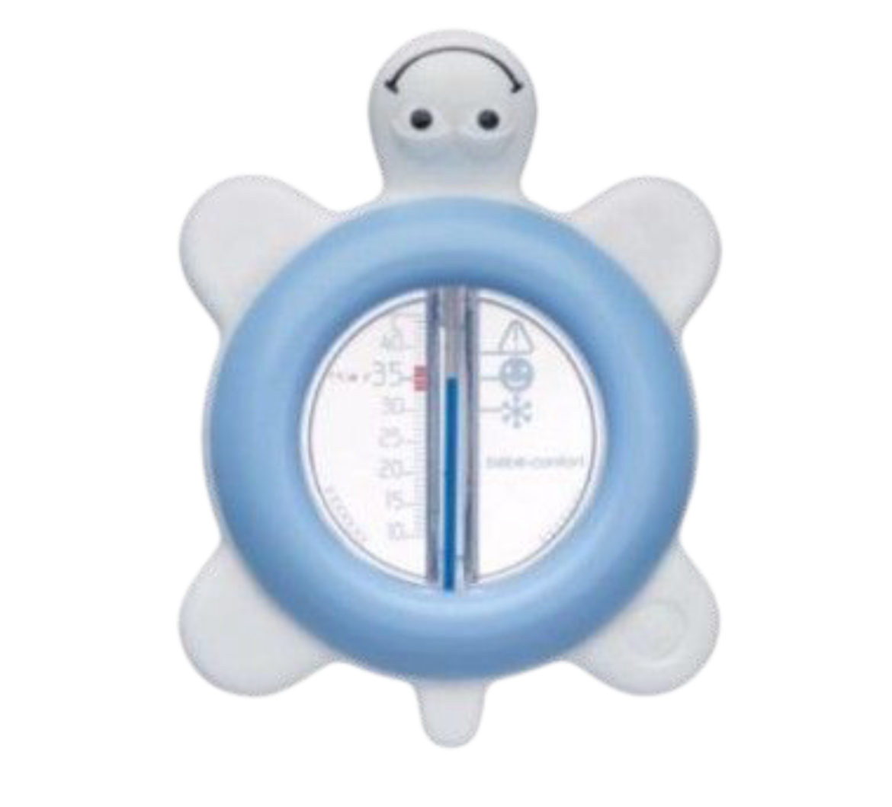
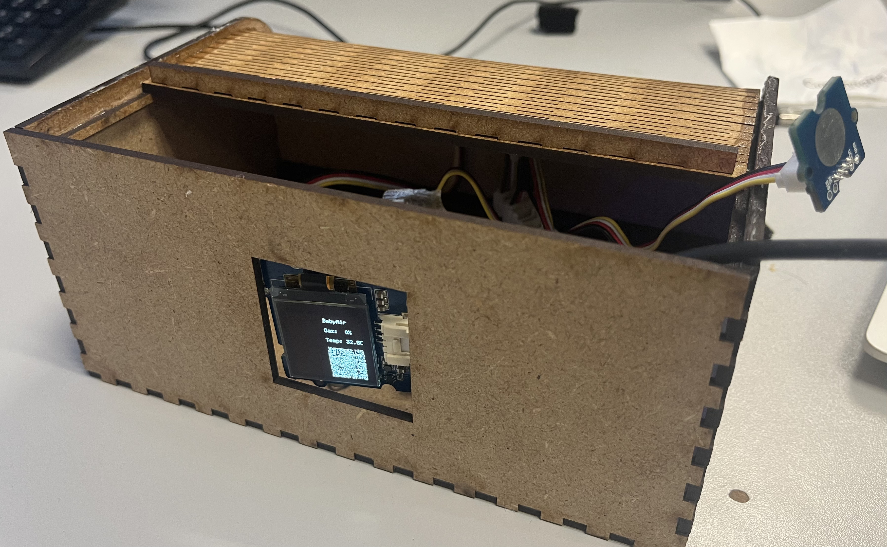
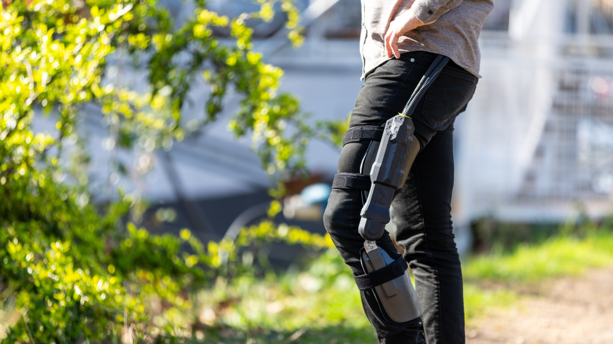

Conception pour maquette d'aéromodélisme nocturne.
Electronic design for nighttime model glider.

Thermomètre de Bain Bébé
Système électronique basse consommation à seuils comparateurs.
Low-power medical bath thermometer with comparative thresholds.
DU TSS
Un projet par semestre.
One project per semester.
Semestre 1Semester 1
Main Robotique Motorisée
Prothèse de main commandée par capteurs myoélectriques.
Hand prosthesis driven by myoelectric sensors.

Semestre 2Semester 2
BabyAir
Boîtier équipé d'un capteur, de la conception à la fabrication.
Sensor enclosure, from design to manufacturing.

Semestre 3Semester 3
Exosquelette & Signaux
Étude biomécanique, électrophysiologie et modélisation.
Biomechanics study, electrophysiology and modeling.
2025 - Aujourd'hui
BUT GEII - 1ère annéeBUT GEII - 1st Year
IUT de Bordeaux. Spécialisation en Électricité, Systèmes Embarqués et Informatique Industrielle.
Bordeaux Institute of Technology. Focused on electronics, automation and industrial computing.
J'ai redoublé la 1ère année l'an dernier.
I repeated the 1st year last year.
Fin 2025
Baccalauréat GénéralGeneral Baccalaureate
Obtention des spécialités Mathématiques et Sciences Physiques.
Graduated with Mathematics and Physics majors.
Engagements & Savoir-Être (Hors IUT)
Personal Experiences & Soft Skills
La pratique régulière d'activités sportives m'apporte une discipline et des compétences transposables dans la gestion de mes projets en ingénierie :
Regular sports activities build the strict discipline and skills I transfer to my daily engineering work:
MusculationWeightlifting
Développement d'une grande rigueur personnelle, persévérance face à l'effort depuis octobre 2026.
Develops self-discipline, perseverance through long tasks since October 2026.
Basket-ballBasketball
Esprit d'équipe affirmé pendant 4 ans.
Strong team spirit for 4 years.
Système Sonore & Lumineux pour Rafale miniature (SLR) - Toy Corporation
Mon rôle sur ce projet : Je me suis occupé de la fabrication de la carte électronique et de la rédaction du Dossier de Conception (DDC) et du Dossier de Fabrication (DDF).
Compétence CONCEVOIR (niveau 1)
AC11.01 :Analyse fonctionnelle à partir du cahier des charges : identification des fonctions (mesure de la tension, informations « Bruit », « Chargé » et « Clignote », buzzer, voyants) et des exigences associées.
AC11.02 :Réalisation du prototype : fabrication de la carte électronique dans le volume imposé (95 x 40 mm, hauteur < 30 mm).
AC11.03 :Rédaction du Dossier de Fabrication (DDF) à partir du Dossier de Conception (DDC).
Compétence VÉRIFIER (niveau 1)
AC12.01 :Application d'une procédure d'essais : test de décharge et mesure de la période du clignotement (1,9 s à +/-20 %).
AC12.02 :Identification des dysfonctionnements : contrôle de l'encombrement et repérage des dérives de soudure.
Rôle MANAGER
Participation à la planification initiale des 18 h de projet et à la répartition des tâches entre les membres du groupe.
Suivi de l'avancement et du budget (< 20 € TTC) à chaque séance.
Échanges avec l'équipe et l'encadrant pour valider la bonne compréhension des exigences du client.
Présentation du produit
Dans le cadre d'opérations de découverte de l'aéromodélisme avec le grand public, l'entreprise Toy Corporation organise des sessions de lancer de planeurs à la main, en soirée ou en début de nuit. Le planeur a la forme d'un Rafale : il doit être visible grâce à des voyants lumineux clignotants et réaliste grâce à un dispositif sonore. Le client confie le développement de ce système sonore et lumineux (référence SLRPROD = CARTE_SON + CARTE_LUMIERE).
Cahier des Charges
Développer le système électronique embarqué d'un planeur miniature pour des lancers nocturnes, conformément aux exigences client suivantes :
EXIG_ENCOMBREMENT : Longueur 95 mm (+/-1 mm), largeur 40 mm (+/-1 mm), hauteur < 30 mm (hors LEDs montées sur le planeur).
EXIG_AUTONOMIE : Autonomie minimale de 60 s à partir de la charge nominale. Source d'énergie non susceptible d'exploser ou de s'enflammer en cas de crash. Fonctionnement garanti de 1,8 V à 5,4 V, tension nominale de 5,0 V.
EXIG_TENSION : Étage de mesure de la tension d'alimentation, avec une précision de +/-5 %.
EXIG_BRUIT : Information binaire pseudo-aléatoire dont la fréquence varie proportionnellement de 280 Hz à 780 Hz (+/-5 %) quand la tension passe de 1,8 V à 5,0 V. Fréquence constante au-dessus de 5,0 V, information nulle sous 1,8 V.
EXIG_CHARGE : Information « Chargé » active au-dessus de 4,9 V (+/-0,1 V) et inactive sous 2,8 V (+/-0,1 V).
EXIG_CLIGNOTE : Signal rectangulaire uniquement si « Chargé » est actif : période de 1,9 s (+/-20 %) et temps actif de 0,1 s (+/-20 %).
EXIG_RETENTISSEMENT : Buzzer dont la membrane vibre en adéquation directe avec l'information « Bruit ».
EXIG_ALLUMAGES : 3 voyants : rouge (aile gauche) et vert (aile droite) constamment allumés, jaune (fuselage) allumé seulement si « Clignote » est actif.
EXIG_INTENSITES : 500 mcd (-/+50 %) par voyant actif, lorsque le super-condensateur est à sa tension nominale.
EXIG_DELAI : 18 h pour l'ensemble du développement (conception, fabrication, vérification, présentation et démonstration).
EXIG_COUT : Coût des composants d'un prototype inférieur à 20 € TTC.
Déroulement du projet
1
Analyse et planification : Lecture du cahier des charges, identification des exigences et répartition des tâches sur les 18 h disponibles.
2
Conception : Étude des blocs fonctionnels (mesure de tension, génération du bruit et du clignotement, buzzer, voyants), choix des composants dans le budget de 20 € et rédaction du Dossier de Conception (DDC).
3
Fabrication : Réalisation de la carte électronique, soudure des composants et rédaction du Dossier de Fabrication (DDF).
4
Vérification : Essais sur la carte (tension, période du clignotement, encombrement) et correction des dérives de soudure.
5
Présentation : Démonstration du fonctionnement du système au client.
Thermomètre De Bain pour Bébé
Mon rôle sur ce projet : J'étais chef d'équipe. J'ai fait principalement la partie vérification et la rédaction du Dossier de Conception (DDC).
My role in this project: I was the team leader. I mainly handled the verification part and wrote the Design Document.
Compétence CONCEVOIR (niveau 1)
AC11.01 :Analyse fonctionnelle du thermomètre : amplification de la mesure, comparateurs de seuils (+5°C à +50°C) et affichage par 3 voyants.Functional analysis of the thermometer: measurement amplification, threshold comparators and 3 indicator lights.
AC11.02 :Réalisation d'un prototype : ajustement des ponts diviseurs de tension par maquettage et simulation Proteus.Prototype building: tuning the voltage dividers through breadboarding and Proteus simulation.
AC11.03 :Rédaction des documents de fabrication : plans mécaniques et typons du PCB double face (100x60mm).Writing the manufacturing documents: mechanical drawings and double-sided PCB layout (100x60mm).
Compétence VÉRIFIER (niveau 1)
AC12.01 :Application d'une procédure d'essais métrologiques en étuve thermique.Applying a metrological test procedure in a thermal chamber.
AC12.02 :Identification des écarts sur les seuils d'alerte lumineuse (36°C et 39°C) et ajustement des résistances pour l'étalonnage.Identifying deviations on the light alert thresholds (36°C and 39°C) and adjusting resistors for calibration.
Rôle MANAGER : chef d'équipe
Coordination du groupe sur toute la durée du projet (40 h).Coordinating the team throughout the project (40 h).
Répartition des blocs de tâches et planification globale dès le lancement.Distributing task blocks and building the overall schedule from the kickoff.
Suivi de l'avancement et du budget (< 20 €), mise à jour du planning à chaque séance.Tracking progress and budget (< 20 €), updating the schedule at every session.
Animation des points d'équipe et préparation de la soutenance.Leading team check-ins and preparing the final defense.
Cahier des Charges
Concevoir une carte électronique étanche basse consommation d'un thermomètre de bain médical grand public.
Design a waterproof, low-power electronic board for a consumer bath medical thermometer device.
EXIG_DIMENSIONS : Circuit imprimé double face de 100mm x 60mm à 4 fixations.
EXIG_AUTONOMIE : Fonctionnement continu > 24h sur batterie LiPo 2S avec switch ON/OFF.
EXIG_SEUILS : Analyse thermique de +5°C à +50°C. Alerte Eau Froide (<36°C), Idéale (36°C-39°C) et Chaude (>39°C).
EXIG_IHM : Affichage direct via 3 voyants distincts étalonnés (Bleu, Vert, Rouge) à intensité de 50 mcd.
EXIG_COUT : Enveloppe budgétaire stricte < 20€, temps de conception de 40 heures.
Déroulement Temporel
S1
Initialisation :Kickoff: Répartition des blocs de tâches et planification globale.
S3
Recherche :Research: Choix des composants d'acquisition et amplificateurs.
S14-19
Conception :Design: Simulations de dérives, routage CAO et validation du DDC.
S25
Intégration :Assembly: Usinage mécanique du typon, cambrage et soudure CMS.
S31-40
Mesures :Testing: Campagne d'essais en étuve thermique, rapport DDV et soutenance.
Main Robotique Motorisée - DU TSS (Semestre 1)
Période : Projet réalisé durant le semestre 1.
Period: Project carried out during semester 1.
Compétence CONCEVOIR (niveau 1)
AC11.01 :Analyse fonctionnelle du besoin prothétique médical : traduction en grandeurs physiques et angles de servomoteurs.Functional analysis of the prosthetic need: converting it into physical quantities and servo angles.
AC11.02 :Réalisation d'un prototype : modélisation des phalanges articulées sous CATIA et validation des formes par impressions 3D successives.Prototype building: modeling the articulated fingers in CATIA and validating shapes through successive 3D prints.
Compétence VÉRIFIER (niveau 1)
AC12.01 :Application d'un protocole d'acquisition et de filtrage logiciel des signaux myoélectriques.Applying a protocol for acquiring and digitally filtering myoelectric signals.
AC12.02 :Identification des écarts lors des tests des capteurs sur l'avant-bras et calibration de la réactivité des doigts.Identifying deviations during sensor tests on the forearm and calibrating finger responsiveness.
Présentation du Projet
Conception interdisciplinaire d'une prothèse de main articulée programmable, reliant l'ingénierie au domaine médical.
Interdisciplinary design of an open articulated programmable hand prosthesis, linking engineering and modern medicine.
Modélisation CAO :CAD Modeling:Conception géométrique et modélisation complète des doigts de la main sur le logiciel CATIA.Geometric design and complete modeling of the hand fingers using CATIA software.
Interface Myoélectrique :Myoelectric Interface:Utilisation de capteurs positionnés sur l'avant-bras pour détecter l'activité musculaire et piloter les mouvements.Use of sensors placed on the forearm to detect muscle activity and drive finger movements.
Programmation Arduino :Arduino Programming:Développement d'algorithmes lors de séances de codage pour traduire les signaux des capteurs en angles pour les servomoteurs des doigts.Development of algorithms during coding sessions to map sensor data to servo motor angles.
Synergie Inter-groupes :Cross-team Synergy:Collaboration étroite avec le groupe Robotique pour l'assemblage mécanique final et l'intégration matérielle de la main.Close collaboration with the Robotics team for final mechanical assembly and hardware integration.
Déroulement (Semestre 1)
1
Étude & Conception :Study & Design: Modélisation 3D des pièces de la main sur le logiciel CATIA.
2
Séances Arduino :Arduino Sessions: Développement du code de contrôle et traitement des signaux d'acquisition.
3
Tests d'Ajustement :Adjustment Tests: Intégration et étalonnage des capteurs placés sur l'avant-bras pour le contrôle des doigts.
4
Réalisation Collective :Co-building: Phase de fabrication finale et assemblage matériel menés en partenariat avec le groupe Robotique.
BabyAir - DU TSS (Semestre 2)
Période : Projet réalisé durant le semestre 2.
Period: Project carried out during semester 2.
Présentation du Projet
BabyAir est un boîtier équipé d'un capteur, réalisé en groupe au cours du semestre 2 du DU TSS. Le projet suit une démarche complète : identification du problème, solution proposée, étude technique, fabrication et bilan.
BabyAir is a sensor enclosure built as a team during semester 2 of the DU TSS. The project follows a complete process: problem identification, proposed solution, technical study, manufacturing and conclusion.
Déroulement du projet
1
Problème :Problem:Identification du besoin à l'origine de BabyAir.Identifying the need behind BabyAir.
2
Solution :Solution:Présentation du boîtier équipé d'un capteur.Presentation of the sensor-equipped enclosure.
3
Partie technique et câblage :Technical part and wiring:Choix des composants et câblage du système.Component selection and system wiring.
4
Boîtier :Enclosure:Modélisation du boîtier avec Boxes.py, puis fabrication.Enclosure modeled with Boxes.py, then manufactured.
5
Bilan :Conclusion:Conclusion du projet.Project wrap-up.
Projet Exosquelette & Signaux - DU TSS (Semestre 3)
Période : Projet réalisé durant le semestre 3.
Period: Project carried out during semester 3.
Compétence CONCEVOIR (niveau 1)
AC11.01 :Analyse fonctionnelle orientée vers les exosquelettes et l'assistance gestuelle.
AC11.02 :Modélisation géométrique de structures articulées sous CATIA.
Compétence VÉRIFIER (niveau 1)
AC12.01 :Application de mesures et d'essais : signaux électrophysiologiques, contraction musculaire et réponse cardiovasculaire à l'effort.
Sortie à la Polyclinique Bordeaux Nord Aquitaine : une visite en milieu hospitalier qui relie le projet du DU TSS au monde de la santé.Visit to the Polyclinique Bordeaux Nord Aquitaine: a hospital visit linking the DU TSS project to the healthcare world.
Présentation du Projet & Axes d'Étude
Projet interdisciplinaire (DU TSS), axé sur l'interaction homme-machine à travers l'étude des exosquelettes et de la physiologie humaine.
Les Exosquelettes :Étude des technologies d'assistance physique, de la compensation des efforts et de la restitution de puissance mécanique.
Signaux Électrophysiologiques :Acquisition, traitement et analyse des signaux électriques issus de l'activité musculaire (type EMG).
Physiologie (Contraction Musculaire & Cardiovasculaire) :Compréhension des mécanismes de contraction des fibres musculaires et suivi de la réponse du système cardiovasculaire lors de l'effort avec l'exosquelette.
Déroulement (Semestre 3)
1
Recherche : Étude bibliographique des exosquelettes et des besoins en rééducation/assistance.
2
Physiologie : Analyse des signaux électrophysiologiques et de la contraction musculaire.
3
Conception : Modélisation 3D et intégration des actionneurs/capteurs.
4
Évaluation : Tests d'efforts, mesures cardiovasculaires et validation globale du prototype.